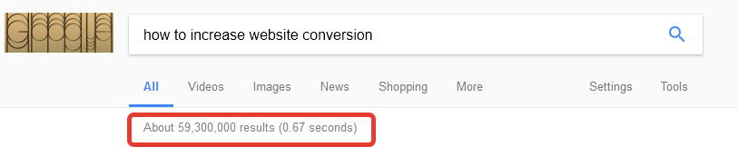
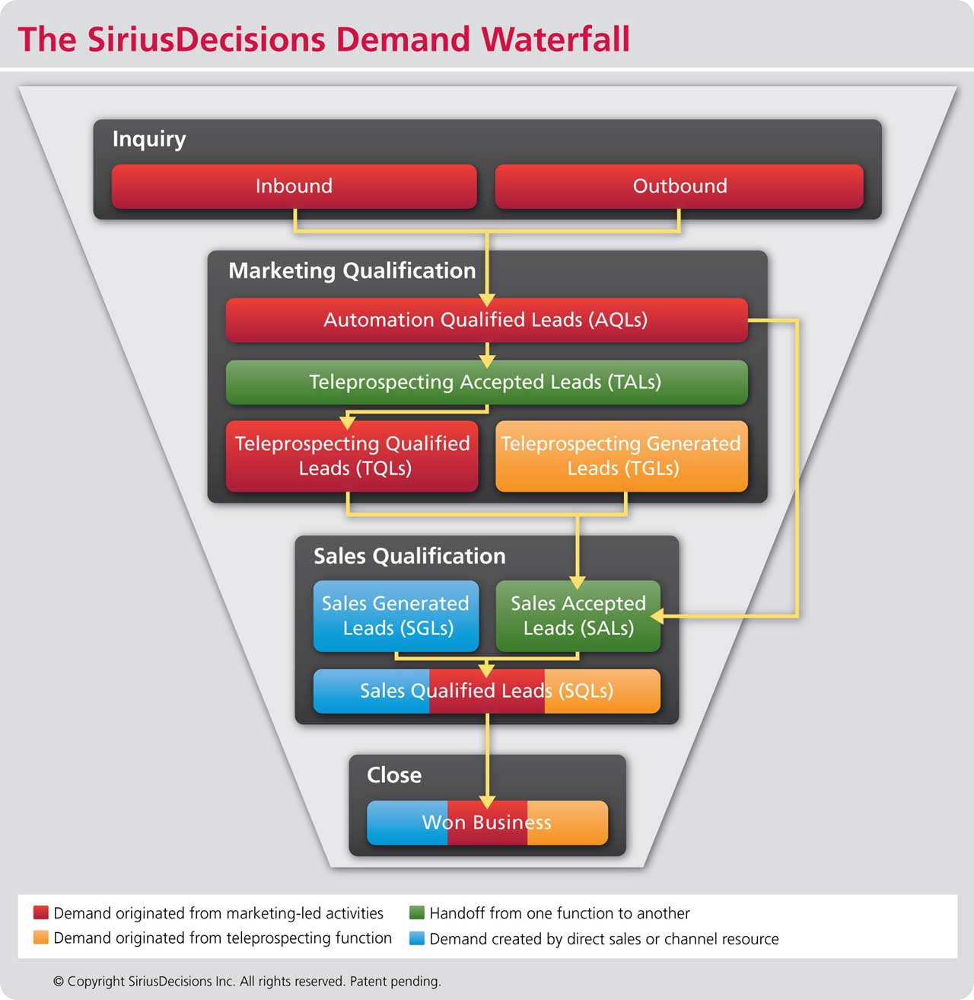
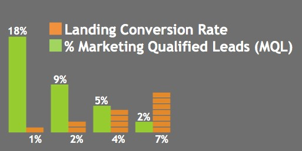
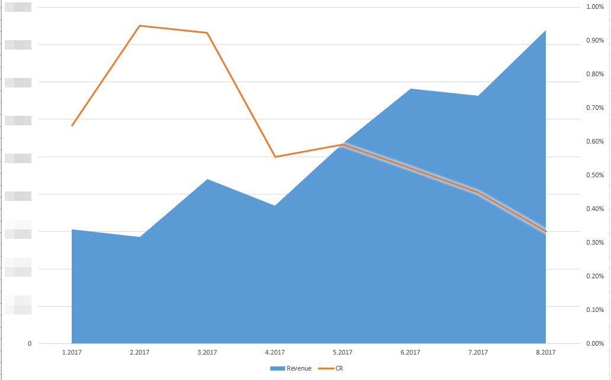

Preparing for a holiday season? Make sure your website conversion rate is *low* enough
Posted on Fri 13 October 2017 in Marketing
There’s no typo in the title. Our figures show that the lower website conversion rate you have during seasonal peaks, the better it is for your sales. In fact, by decreasing conversion, we managed to boost our sales. Read on to learn how that works.
Everyone is obsessed with website conversion optimization nowadays. It’s considered a major indicator of your web performance. Google has a whopping 59,300,000 results for those who want to improve their conversion rate.

Jayson DeMers writes on Forbes:
If I had to pick only one metric, or one variable, that matters to the bottom line of an online marketing campaign, it would be your conversion rate.
There are even special holiday conversion optimization guides, like this excellent one by Pratik Dholakiya.
So conversion rate is king, right? Not entirely.
The conversion rate delusion
Let’s see what makes people convert more when you tune things on your website. A variation of Pareto principle applies perfectly here:
- 20% of resulting growth is because you’re removing friction. You fix obvious usability issues, helping the decided customers who experienced troubles with buying.
- 80% is persuasion of the undecided. That is, acquiring clients who were not initially going to make an order right away.
And here lies the issue. The majority of conversion experiments drive additional leads from the upper parts of the sales funnel. That means that fewer prospective customers are going to buy anything from you, just because they haven’t decided yet. And, probably, won’t decide ever.
Take a look at a SiriusDecisions Demand Waterfall model:

The higher the degree of persuasion on your site, the smaller MQL (Marketing Qualified Leads) proportion you will be having.
Don’t take my word for it. Larry Kim of Wordstream conducted research on the same matter. His results speak for themselves. As the website’s conversion rate is going up, fewer and fewer prospective clients turn into buyers.

Brad Smith with Codeless put together even more compelling evidence that thoughtless conversion rate optimization leads nowhere but towards a decline in sales.
But the biggest problem arises for seasonal businesses. While having low MQL rate off-season may be a desired behavior, you would certainly not want to miss the most engaged shoppers during the high season.
Real-life story
As a Top-10 Russian online travel agency, we have pronounced seasonal demand fluctuations. Our product is complicated, and we employ a few dozens of experts to help people make the right choice. In other words, our bottleneck is human interaction.
We had two goals:
- Make the most revenue both during low and high seasons
- Keep sales efficiency stable, dealing with demand spikes and downturns
First, we identified three distinctive customer intents from the top to the bottom of a sales funnel. For us, they are:
- Consideration: “A ballpark estimate of how much my tour would cost.”
- Evaluation: “Select a particular hotel that fits my goals most.”
- Purchase “Book a hotel, buy tickets, etc.”
There is a 2x difference in lead count between the Consideration and Purchase option. In other words, by adding a “Calculate my tour for me” option on the website, the lead volume doubles.
Throughout the year, we experimented with different CTAs. We switched to the top of the funnel during low season and rolled back to the bottom when demand grew.
So how does all that transform into revenue? Let’s take a look at our CR and income for Q1-Q3 2017:

I’m not at liberty to give out specific revenue figures, but the trend is apparent. By managing the conversion rate, we were able to make the most of the low season at the same time not drowning in summer’s demand surge.
Takeaways
- Almost every business has seasonal spikes. Increase and decrease your conversion rate depending on the season.
- Identify your buyers’ intents along their customer journey. Create different a CTA for each one.
- Make the above options easily switchable. For instance, it takes us about a 1 minute to switch the conversion rate option on our website.
- When you feel you need more leads, upshift. When you’re overloaded, downshift. That applies to individual products.
- Watch the sales. For every A/B test, think about how the feature affects the entire funnel, not only website’s CR.
Have you had to lower website CR to make it sell more? Please share in comments!